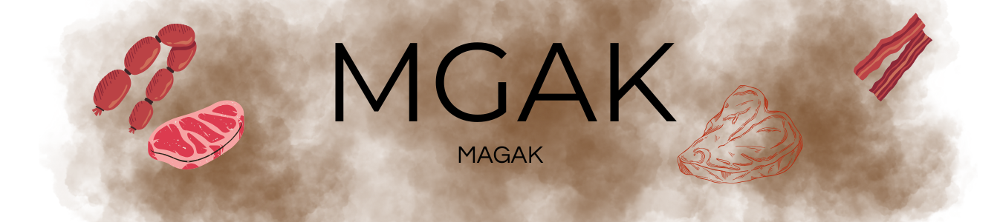
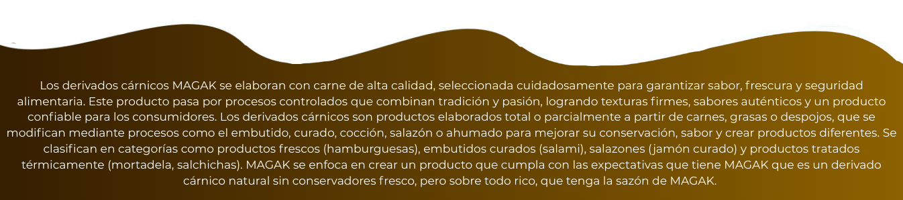
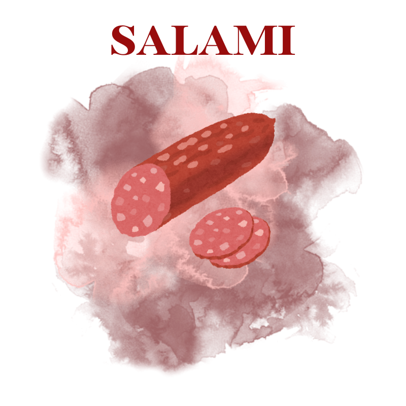

|  |
|---|
| |
| DERIVADO CARNICO |
|  |
SALAMI "EL TOQUE GOURMET QUE TU PALADAR MERECE"
|
|
|---|---|
El Salami MAGAK es un producto cárnico de alta calidad, elaborado con carne seleccionada y especias naturales que le confieren un sabor auténtico e inconfundible. Su proceso de curado y preparación controlado garantiza textura firme, aroma característico y jugosidad, haciendo de cada rebanada una experiencia gourmet. Ideal para disfrutar solo, en bocadillos, tablas de charcutería o como ingrediente en tus recetas favoritas, el salami MAGAK combina tradición, sabor y frescura, ofreciendo un producto seguro, nutritivo y delicioso para toda la familia. Un sabor que solo el salami de MAGAK te puede ofrecer ya que es un cárnico que contiene la sazón de quienes cocinaron y crearon este producto. |
 |
| INGREDIENTES | |
| En la receta del salami, la carne de cerdo y de res se combina para lograr un equilibrio ideal de grasa, proteína y jugosidad; el vino tinto o vinagre actúa como acidificante, suavizando la carne y ayudando a su conservación, mientras que la paprika, pimienta negra y ajo en polvo aportan color, aroma y sabor característicos. La sal realza el sabor, extrae humedad y ayuda a ligar las proteínas, y el azúcar equilibra la acidez y favorece el desarrollo del color. Finalmente, el orégano y la nuez moscada aportan notas aromáticas y cálidas que completan el sabor tradicional del salami, haciendo que cada bocado sea intenso y equilibrado. MAGAK tiene cada uno de sus ingredientes medidos y seleccionados para generar un buen producto haciendo único al salami en sabor y sobre todo la calidad. | 500 g de carne molida de cerdo |
| PROCESO | |
Para preparar el salami MAGAK, primero se mezclan todos los ingredientes hasta formar una pasta uniforme, que luego se rellena en tripas de cerdo; después, se deja reposar en el refrigerador durante 24 horas para que los sabores se integren y la carne se compacte. A continuación, se cocina ya sea en horno a 180 °C durante una hora o en agua caliente por el mismo tiempo, asegurando que la cocción sea uniforme. Finalmente, se deja enfriar por completo antes de cortar, lo que permite que el salami conserve su textura firme, sabor intenso y jugosidad característica. |
|
| INGREDIENTE BASE | |
La carne es esencial en un derivado cárnico porque es el componente principal que define su identidad, textura y sabor. Contiene proteínas y grasas que permiten formar la estructura del embutido, retener jugosidad y mantener la firmeza después del curado o cocción. La carne molida es fundamental en el salami MAGAK porque constituye la base del producto, proporcionando estructura, textura y jugosidad. Al estar molida, permite que las grasas y proteínas se mezclen uniformemente con las especias y condimentos, logrando una pasta homogénea que se puede rellenar en las tripas y cocinar sin que se desarme. Además, la carne molida facilita que el salami adquiera su textura firme pero tierna, retenga los sabores de los condimentos y mantenga la consistencia característica que distingue a un buen salami artesanal. Sin la carne molida, sería imposible formar un embutido uniforme y sabroso como el salami de MAGAK. |
|
| USOS Y BENEFICIOS | |
El salami de MAGAK es muy versátil y puede disfrutarse directamente en rebanadas, en sándwiches, bocadillos, tablas de charcutería, o como ingrediente en pizzas, pastas y ensaladas, agregando sabor intenso y textura firme a tus preparaciones. Su proceso artesanal y natural garantiza un producto puro, sin conservantes ni colorantes artificiales, preservando el sabor auténtico de la carne y las especias, así como la jugosidad y firmeza características del embutido. Además, al elaborarse con métodos tradicionales, mantiene la calidad, frescura y aroma que hacen que cada bocado sea más sabroso y nutritivo. |
|
| ©MAGAK.carnico | |